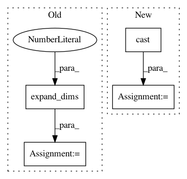

352ebffaa5bd74a454c3b2b10121b2d959ade2fc,opennmt/models/sequence_tagger.py,SequenceTagger,_build,#SequenceTagger#Any#Any#Any#Any#,49
Before Change
// predictions must contain tensors with the same batch size
// so replicate the transition matrix accordingly.
transition_params = tf.convert_to_tensor(transition_params)
transition_params = tf.expand_dims(transition_params, axis=0)
transition_params = tf.tile(transition_params, [tf.shape(logits)[0], 1, 1])
predictions["logits"] = logits
predictions["transition_params"] = transition_params
else:
After Change
logits,
transition_params,
encoder_sequence_length)
labels = tf.cast(labels, tf.int64)
else:
probs = tf.nn.softmax(logits)
labels = tf.argmax(probs, axis=2)
labels_vocab_rev = tf.contrib.lookup.index_to_string_table_from_file(
self.labels_vocabulary_file,
vocab_size=self.num_labels)
predictions = {}
predictions["length"] = encoder_sequence_length
predictions["labels"] = labels_vocab_rev.lookup(labels)
return tf.estimator.EstimatorSpec(
mode,
predictions=predictions)
In pattern: SUPERPATTERN
Frequency: 4
Non-data size: 4
Instances
Project Name: OpenNMT/OpenNMT-tf
Commit Name: 352ebffaa5bd74a454c3b2b10121b2d959ade2fc
Time: 2017-08-22
Author: guillaume.klein@systrangroup.com
File Name: opennmt/models/sequence_tagger.py
Class Name: SequenceTagger
Method Name: _build
Project Name: tensorflow/transform
Commit Name: 7a8d2946efeeccbef7adcb25eca857aedab04ef0
Time: 2018-08-07
Author: tf-transform-dev@google.com
File Name: tensorflow_transform/mappers.py
Class Name:
Method Name: scale_to_z_score
Project Name: dmlc/gluon-nlp
Commit Name: 75c29a3518ee42b98cc651b6922cbae85d2e961e
Time: 2020-02-07
Author: linhaibin.eric@gmail.com
File Name: src/gluonnlp/model/bert.py
Class Name: BERTEncoder
Method Name: hybrid_forward
Project Name: dmlc/gluon-nlp
Commit Name: e88d55e77e55b8e562881ed9d12160053810961b
Time: 2020-01-24
Author: linhaibin.eric@gmail.com
File Name: src/gluonnlp/model/bert.py
Class Name: BERTEncoder
Method Name: hybrid_forward